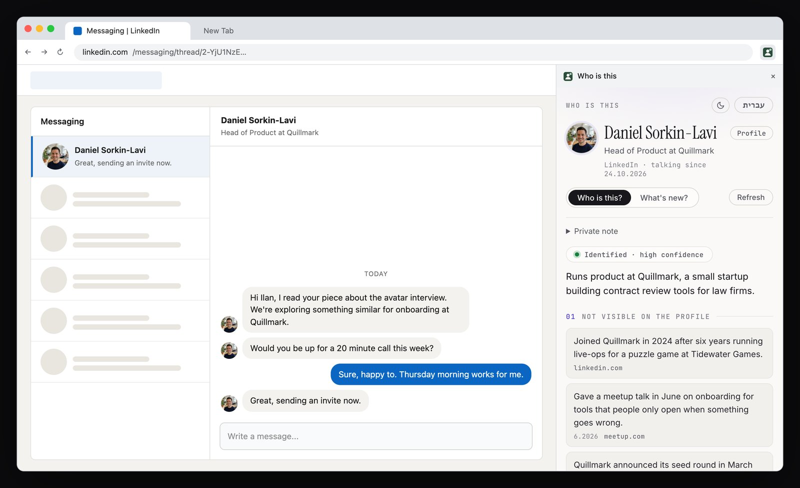
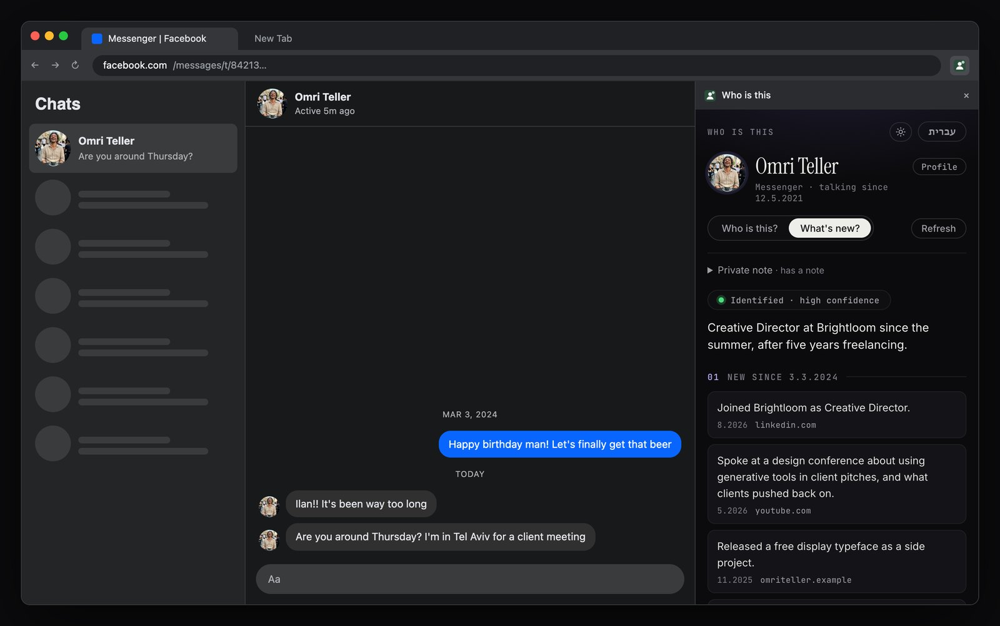
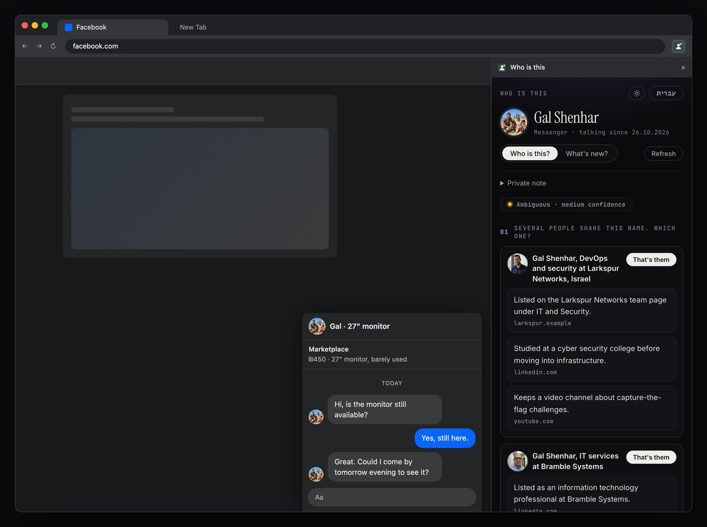

Most of my new conversations start in a message. Someone writes on LinkedIn about a project, someone answers a Marketplace listing on Facebook, an old colleague resurfaces after two years. By the second or third message I usually want to know who I'm talking to: what their company does, what they've worked on, whether we have something in common. And every time, the answer lives in another tab.
So the conversation stops. I open the profile, then a search, then the company site, and come back a few minutes later having half forgotten what I was going to say. I wanted the answer to be there already, next to the chat, while the conversation is still happening.
I built it as a Chrome extension with a side panel. It works in LinkedIn messaging and in Facebook Messenger, both on the full messages pages and in the small chat windows that pop up at the bottom of the feed. Open a chat, and the panel shows who is on the other side, with a source for every line.
Test the premise before the extension
The extension itself is the easy part. The part that decides whether it is worth building is identity. Plenty of people share a name, and a language model will happily merge three of them into one confident paragraph. A brief about the wrong person is worse than no brief at all, because it sounds right.
So before any extension code, I wrote a small script: run a few web searches, hand the results to Claude, and ask for a brief that only states facts it can tie to an anchor (the profile URL, or details that match what I already know). Name alone is not a match. If several people fit, say so. If nobody fits, say that. And every fact has to carry the URL of the search result it came from.
Then, as I've written before, I fed it inputs where I knew the right answer was nothing. An invented name with an invented job. A very common Israeli name with a vague context line. A real name with plenty of search results, paired with a context that fits none of them. All three came back empty: "not found" or "ambiguous", no facts. In the common-name case it found a near match, an engineer at the right kind of company, and rejected him because he lived in a different city. That was the behaviour I wanted before trusting it with anything real.
Only then did it run on six people I had actually been messaging. All six were identified, every cited source was one of the real search results, and the three I know personally were described correctly.
A correct answer that didn't help
One of the six was an old friend I used to work with. The brief about him was accurate, sourced, and completely useless to me. I know who he is. What I didn't know was what had happened since we last talked, and the brief had no idea we had a history at all.
That split the panel into two modes. Who is this? is for someone new: what isn't visible on their profile, and a few natural ways to open. What's new? is for someone I already know: it reads the dates in the thread, finds the last time we talked, and looks only for things that happened after it. A private note per person, kept only in my browser, tells it what I already know and anchors the search. A note, or a thread history older than a month, switches the default to What's new.

Ambiguous is not an answer
The first time I used it for real, on a Marketplace chat, it said "ambiguous": at least two people with that name. That was honest, and it was also no help. The model had found both of them and then shown me neither, because I had told it never to guess.
Not guessing was right. Hiding what it found was not. Now an ambiguous result shows each person as a separate card, with what was found about that person only and where it came from, and a button that says That's them. The panel still never merges two people into one. It just stops pretending the choice isn't mine. Picking one is remembered for that contact and becomes the anchor for every later brief.

The shortcut I didn't take
Looking at that screen, the obvious idea is the photo. The chat shows one, the candidates have one, so let the machine match them and skip the cards.
I tested the harmless version of that first: not comparing faces, only checking whether the chat photo is the same picture as a candidate's profile photo, using a perceptual hash. Identical pictures score close to zero. The chat photo against the right person's profile photo scored between 21 and 28. Photos of entirely different people, used as a control, scored between 19 and 41. In other words, no signal at all.
same man different men: 24 to 34
identical photos: under 8
The reason is obvious once you see it. People put a family photo where they talk to friends and a headshot where they look for work. The only thing those two images share is a face, and matching faces to find out who a stranger is, is a different kind of tool from the one I set out to build. It is also the kind I don't think should exist as a browser extension. So the photos stay in the panel, for me to look at, and the machine doesn't decide anything from them.
What it reads, and what it doesn't
Most of the rules came from the same question: what is the smallest amount this thing needs to see?
- Only threads I'm part of. If I haven't replied in a thread, the panel says so and searches for nothing. No profiles, feeds, comments or message requests from strangers.
- Only the header and metadata. The content script takes the name, the headline, the profile link, who sent each message and when. What the messages say is never kept, searched or sent anywhere.
- Keys and searches stay on my machine. The panel talks to a small server on my laptop, which runs the searches and calls Claude. The extension holds no API keys, and the server refuses requests from any web page.
- Professional, public, and sourced. Role, company, work, talks, public posts. No addresses, family, health, religion, politics or money, even when a search result mentions them. Any fact whose source isn't among the search results is dropped before it reaches the screen.
- Nothing is stored about anyone. Briefs are cached for three days so switching tabs doesn't cost another search. Notes and picks live in my browser.
What went wrong
- It didn't work where I actually chat. I had built and tested it on the full messaging pages. In practice I talk in the small chat popups at the bottom of the feed. On LinkedIn those live inside a shadow DOM the content script couldn't see; on Facebook they are a different structure altogether, and a Marketplace chat has no profile link at all, only a first name and an avatar.
- The empty panel. After installing it, the panel stayed blank. Tabs that were open before an extension loads have no content script, and a bug in the panel turned the "reload this page" message into the empty state. The fix was to stop asking: the panel now injects the script itself when it finds a tab without one.
- Messenger has little to anchor on. Facebook profiles are barely indexed by search engines and the profile page doesn't contain the intro. Without a note, many Messenger contacts come back as not found. That is the correct answer, and it is still the weakest part of the tool.
Why it stays on my machine
It works, and I use it, but I'm not releasing it. A public extension that reads LinkedIn pages runs against their terms, and a tool for researching the people in your conversations is easy to turn into a tool for researching anyone. The version that makes sense to me is the narrow one: my threads, my notes, a model that shows its sources, and a person who makes the call.
The interesting engineering wasn't the scraping or the prompt. It was the list of things the panel refuses to do, and making each of those refusals a line of code rather than a hope.